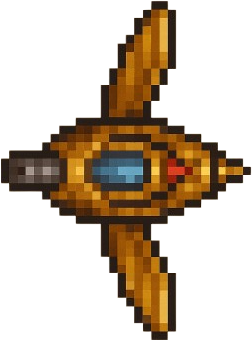
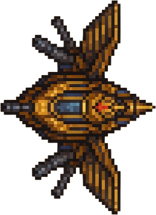
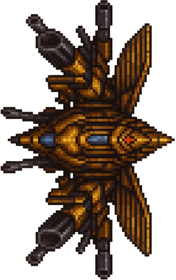
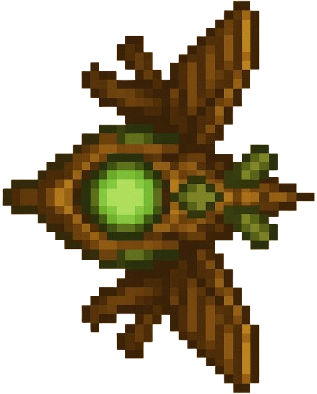
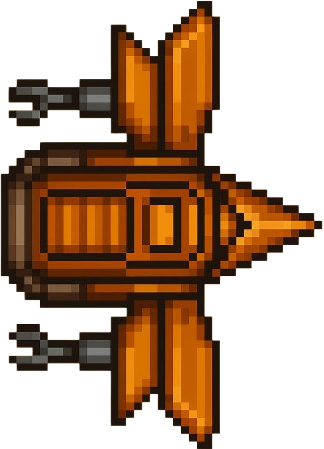

🟦 Unités alliées¶
Bienvenue dans le guide des unités alliées de Galad Islands. Retrouvez ici toutes les informations sur les unités du camp joueur, leurs capacités et conseils tactiques.
Vue d'ensemble¶
Le camp des joueurs propose 5 unités principales, chacune avec ses spécificités tactiques :
| Unité | Type | Rôle | Coût | Vie | Attaque |
|---|---|---|---|---|---|
| Zasper | Scout | Reconnaissance | 50 or | 100 | 25 |
| Barhamus | Maraudeur | Combat moyen | 100 or | 200 | 50 |
| Draupnir | Léviathan | Unité lourde | 300 or | 500 | 150 |
| Druid | Support | Soigneur | 150 or | 150 | 0 |
| Architect | Constructeur | Défense | 200 or | 180 | 30 |
⚡ Zasper — Scout léger¶

Caractéristiques de Zasper¶
- Type : Unité de reconnaissance
- Vitesse : ⭐⭐⭐⭐⭐ (Très rapide)
- Résistance : ⭐⭐ (Fragile)
- Attaque : ⭐⭐ (Légère)
- Coût : 50 pièces d'or
Capacité spéciale de Zasper : Vision étendue (R)¶
- Effet : Révèle une large zone autour de l'unité pendant 10 secondes
- Cooldown : 15 secondes
- Portée : 200% de la vision normale
Utilisation tactique de Zasper¶
Stratégie Zasper
Utilisez le Zasper pour :
- Éclaireur en début de partie
- Exploration rapide de la carte
- Harcèlement des unités ennemies isolées
- Collecte rapide de ressources
- Diversion et esquive
Attention
Le Zasper est très fragile ! Évitez les combats frontaux contre des unités lourdes.
🛡️ Barhamus — Maraudeur moyen¶

Caractéristiques de Barhamus¶
- Type : Unité de combat polyvalente
- Vitesse : ⭐⭐⭐ (Normale)
- Résistance : ⭐⭐⭐⭐ (Robuste)
- Attaque : ⭐⭐⭐ (Équilibrée)
- Coût : 100 pièces d'or
Capacité spéciale de Barhamus : Charge (R)¶
- Effet : Attaque rapide avec +50% de dégâts pendant 5 secondes
- Cooldown : 20 secondes
- Bonus : Vitesse de déplacement temporairement accrue
Utilisation tactique de Barhamus¶
Stratégie Barhamus
Le Barhamus excelle pour :
- Combat de ligne de front
- Défense de positions stratégiques
- Escorte d'unités fragiles (Druid, Architect)
- Attaques coordonnées en groupe
- Résistance aux attaques ennemies
🐉 Draupnir — Léviathan lourd¶

Caractéristiques de Draupnir¶
- Type : Unité de destruction massive
- Vitesse : ⭐ (Très lent)
- Résistance : ⭐⭐⭐⭐⭐ (Blindé)
- Attaque : ⭐⭐⭐⭐⭐ (Dévastatrice)
- Coût : 300 pièces d'or
Capacité spéciale de Draupnir : Bombardement (R)¶
- Effet : Attaque de zone infligeant des dégâts massifs
- Cooldown : 30 secondes
- Zone d'effet : 3x3 cases
- Dégâts : 200% des dégâts normaux
Utilisation tactique de Draupnir¶
Stratégie Draupnir
Le Draupnir est parfait pour :
- Détruire les défenses ennemies
- Éliminer les groupes d'unités
- Contrôler les points stratégiques
- Assauts finaux sur les bases ennemies
- Tank principal dans les gros combats
Gestion du Draupnir
- Très coûteux à remplacer
- Vulnérable aux attaques coordonnées
- Nécessite une escorte de soutien
🌿 Druid — Soigneur et support¶

Caractéristiques de Druid¶
- Type : Unité de support médical
- Vitesse : ⭐⭐ (Lent)
- Résistance : ⭐⭐⭐ (Moyenne)
- Attaque : ⭐ (Aucune attaque directe)
- Coût : 150 pièces d'or
Capacité spéciale de Druid : Soin de groupe (R)¶
- Effet : Soigne toutes les unités alliées dans un rayon de 100 pixels
- Cooldown : 12 secondes
- Soin : 50 points de vie par unité
- Soin continu : 5 PV/seconde en combat
Utilisation tactique de Druid¶
Stratégie Druid
Le Druid est essentiel pour :
- Maintenir vos unités en vie
- Prolonger les combats difficiles
- Soutenir les attaques prolongées
- Économiser l'or en évitant les remplacements
- Support arrière dans les formations
Protection du Druid
Le Druid est une cible prioritaire !
- Gardez-le toujours en arrière
- Entourez-le d'unités de combat
- Utilisez le terrain à votre avantage
🏗️ Architect — Constructeur de défenses¶

Caractéristiques d'Architect¶
- Type : Unité de construction
- Vitesse : ⭐⭐ (Lent)
- Résistance : ⭐⭐⭐ (Moyenne)
- Attaque : ⭐⭐ (Attaque de construction)
- Coût : 200 pièces d'or
Capacité spéciale d'Architect : Construction rapide (R)¶
- Effet : Construit instantanément une tour de défense
- Cooldown : 45 secondes
- Types : Tour d'attaque ou tour de soin
- Coût matériel : 50 or supplémentaires
Constructions disponibles (Architect)¶
Tour de Défense
- Coût : 50 or (+ coût Architect)
- Vie : 300 PV
- Attaque : 40 dégâts/seconde
- Portée : 150 pixels
Tour de Soin
- Coût : 75 or (+ coût Architect)
- Vie : 250 PV
- Soin : 20 PV/seconde dans un rayon de 100 pixels
- Cibles : Unités alliées uniquement
Utilisation tactique d'Architect¶
Stratégie Architect
L'Architect est crucial pour :
- Sécuriser des positions stratégiques
- Créer des points de défense
- Contrôler les passages étroits
- Établir des bases avancées
- Soutenir des sièges prolongés
🎯 Compositions d'équipe recommandées (alliés)¶
Formation "Exploration" (Début de partie)¶
- 2x Zasper : Reconnaissance rapide
- 1x Barhamus : Protection
- 1x Druid : Soutien médical
- Total : 350 or
Formation "Équilibrée" (Milieu de partie)¶
- 1x Zasper : Éclaireur
- 2x Barhamus : Combat principal
- 1x Draupnir : Puissance de feu
- 1x Druid : Support
- Total : 650 or
Formation "Assaut lourd" (Fin de partie)¶
- 2x Draupnir : Destruction massive
- 2x Barhamus : Escorte
- 1x Druid : Soin continu
- 1x Architect : Défense des acquis
- Total : 1050 or
📊 Tableau de compatibilité (alliés)¶
| VS | Zasper | Barhamus | Draupnir | Druid | Architect |
|---|---|---|---|---|---|
| Zasper | ⚖️ Égal | ❌ Faible | ❌ Très faible | ✅ Fort | ✅ Moyen |
| Barhamus | ✅ Fort | ⚖️ Égal | ❌ Faible | ✅ Très fort | ✅ Fort |
| Draupnir | ✅ Très fort | ✅ Fort | ⚖️ Égal | ✅ Très fort | ✅ Fort |
| Tours défense | ❌ Faible | ⚖️ Égal | ✅ Fort | ❌ Faible | ❌ Faible |